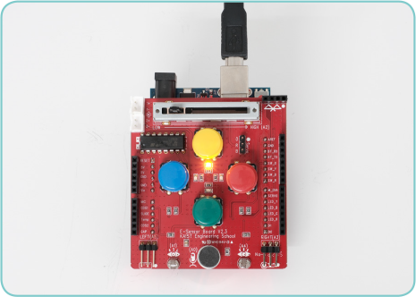
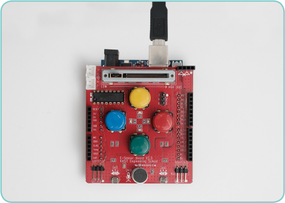

동작 원리
소리 센서의 값이 일정 크기(30) 이상이면 학생들이 교실에 있다고 판단하여 LED가 켜진다.
소리 센서의 값이 0에 가까우면 학생들이 교실에 없다고 판단하여 LED가 꺼진다.
화면 구성하기
엔트리봇이 소리 센서의 값인 5를 말하고 있는 실행 화면 그림
5오브젝트 : 엔트리봇
센서 보드 : 소리 센서
프로그래밍하기
엔트리봇
(1) 시작 버튼을 클릭하면 현재 측정되는 소리 센서의 값을 말한다.
(2) (3)~(5)의 과정을 반복한다.
(3) 소리 센서의 값이 30 이상이면 노랑 LED가 켜진다.
(4) 소리 센서의 값이 30보다 작으면 노랑 LED가 꺼진다.
(5) 2초 기다린다.
소리 센서의 값이 30 이상이면 LED가 켜짐.
소리 센서의 값이 30 미만이면 LED가 꺼짐.
